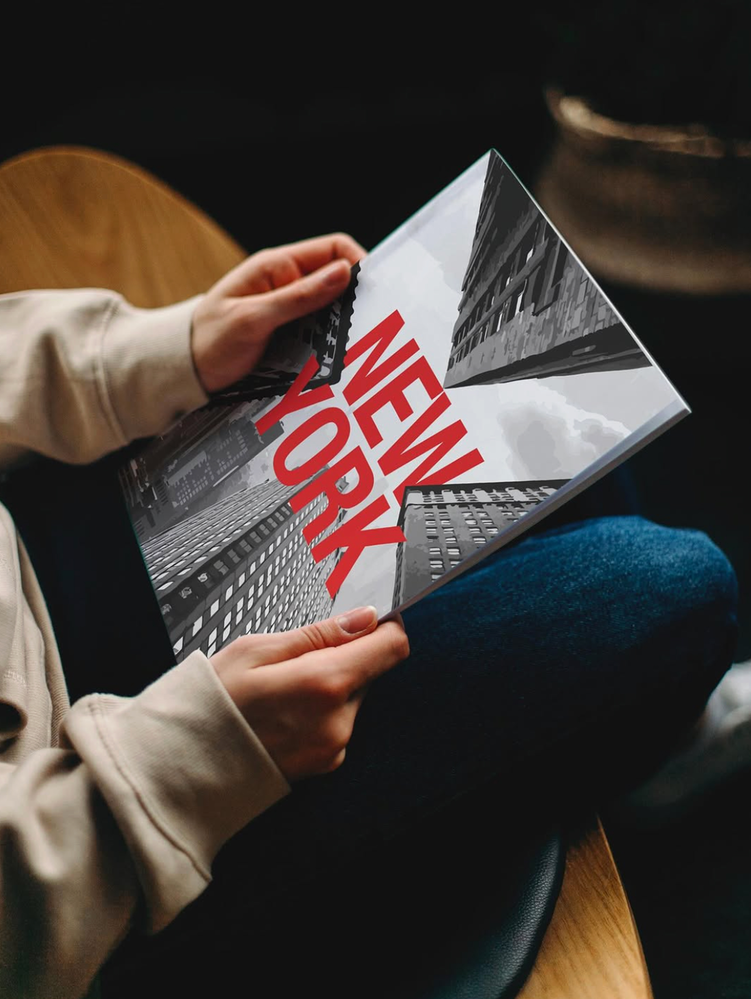
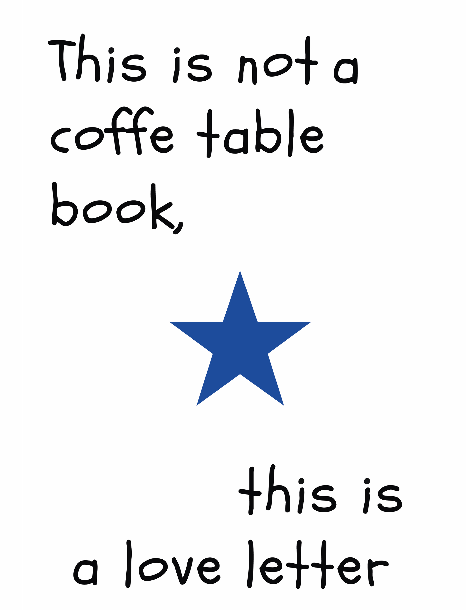
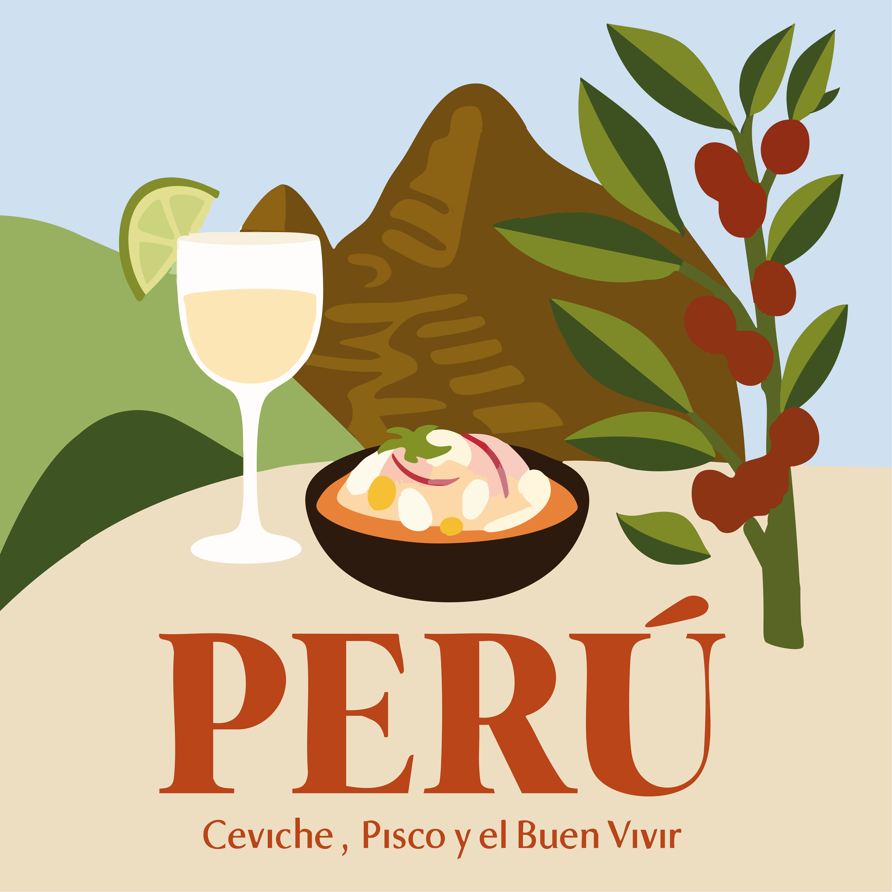
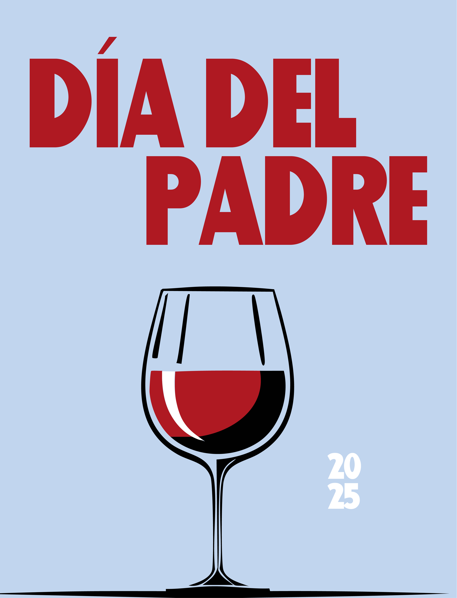
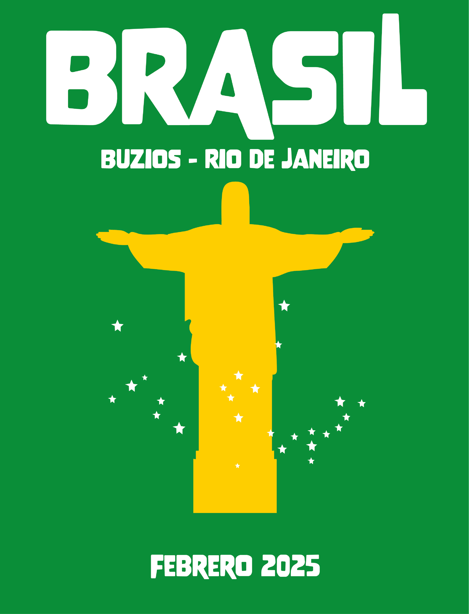
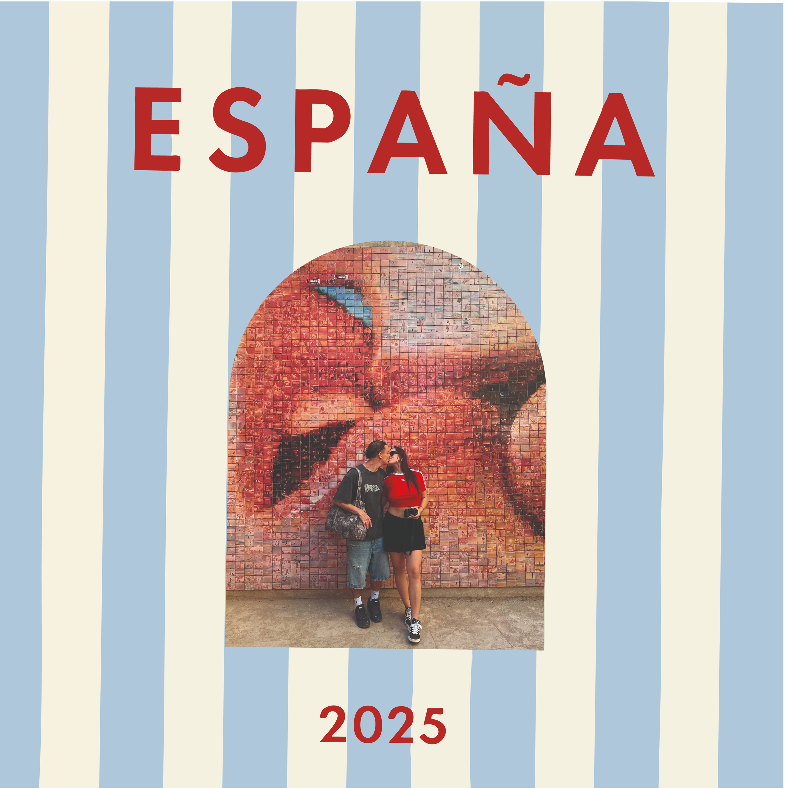
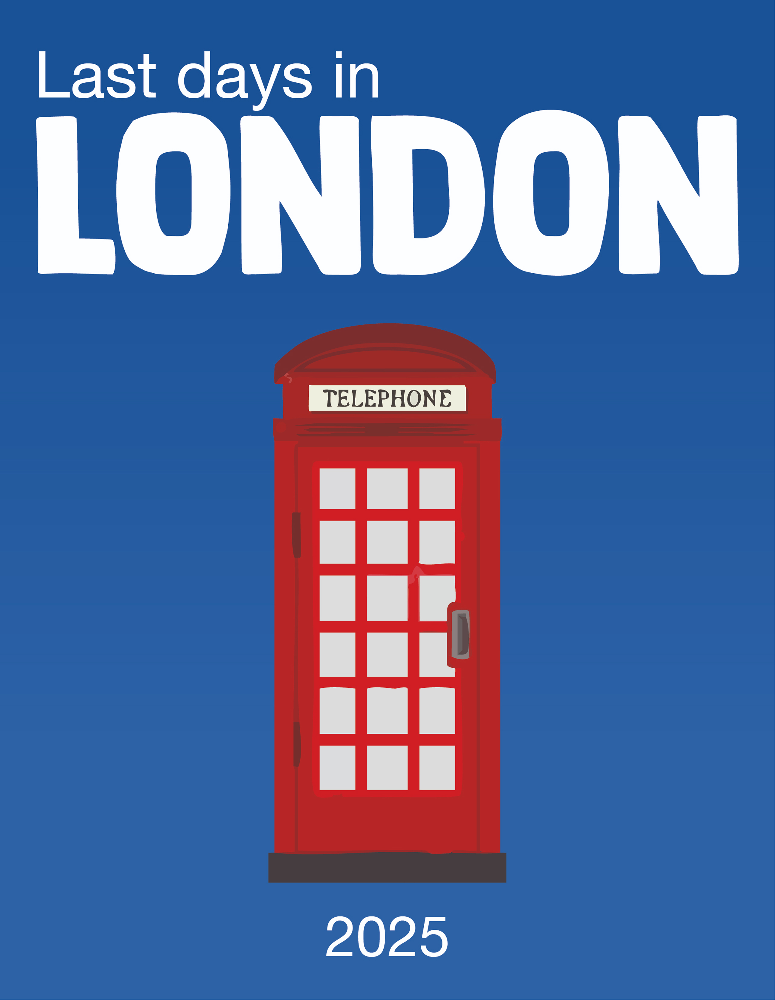
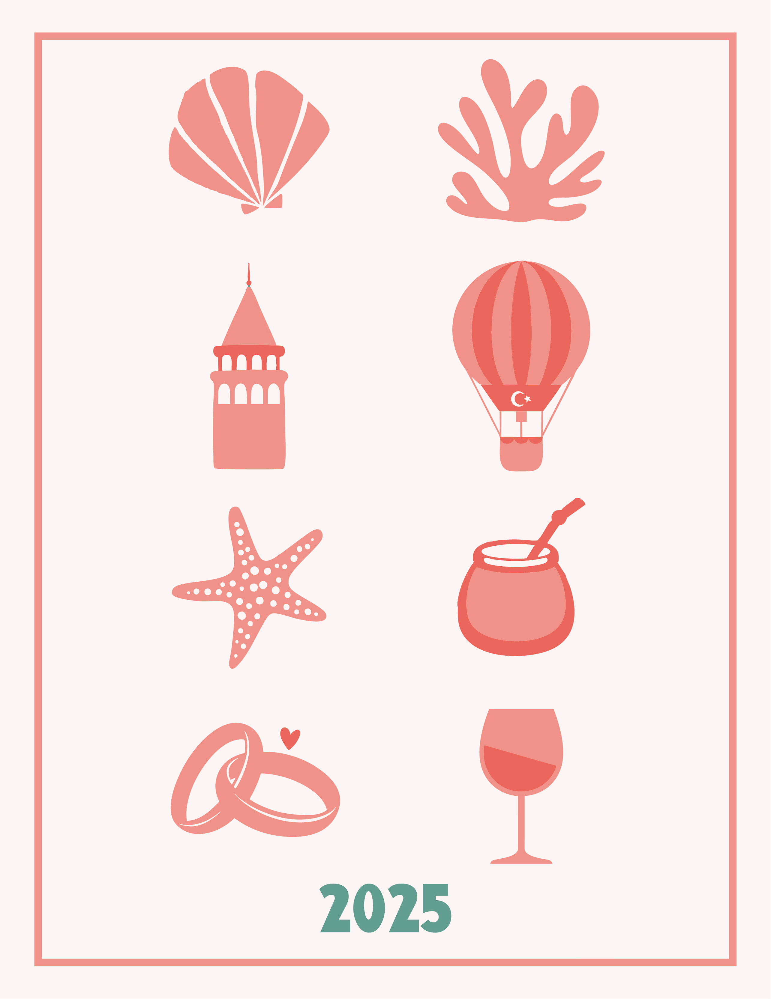
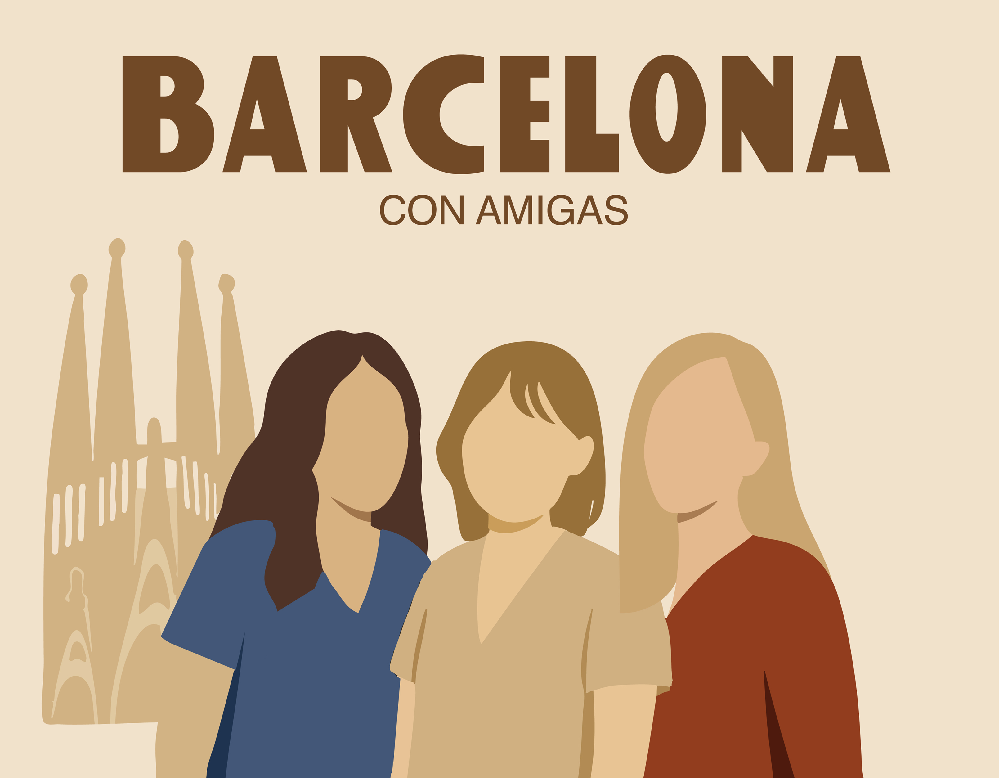
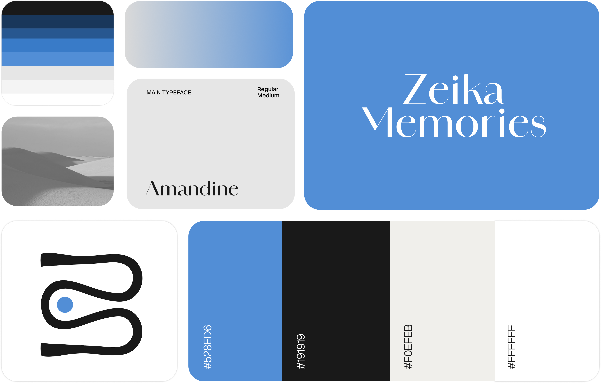

Zeika is a photobook design studio I founded in 2020 that transforms digital photography into meaningful physical objects. what began as a personal project has grown into a three-person team producing hundreds of books each year.
My relationship with photography began early. At 19, I started creating photobooks from family trips — first for home, then as gifts. During university, this personal habit evolved into the foundation of Zeika Memories.


In 2020, I sold my first 20 books. As demand grew, I refined workflows, communication, and design — transforming a personal project into a structured service.



Sharing videos on Instagram and TikTok became a turning point. Combined with marketing training, this helped define Zeika's audience and significantly expand its reach.

In 2025, I redesigned the visual language of book covers, introducing stronger typography and layout systems. This shift elevated the perceived value of the books and strengthened engagement.









As Zeika expanded, I developed a cohesive visual identity centered around movement and trust. The blue circle became a core element, shaping how the brand appears across platforms and materials.

As demand increased, Zeika evolved into a team of three. Structured workflows allowed us to maintain quality while managing growing production.
Since 2020, Zeika has grown steadily — reaching 281 books produced by 2026 and expanding from a personal project into an operational design studio.
I lead both the creative and operational development of Zeika — designing visual systems, managing workflows, and guiding the overall direction of the brand.
Zeika continues to grow toward a scalable platform that supports storytelling through design, collaboration, and a deeper connection between photography and memory.